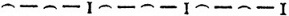

Not: Yunan tragedyası iki kısımdan ibarettir: İambik trimeter () ile yazılmış dramatik kısımlar (prologos, epeisodion, eksodos) ve lirik vezinlerle yazılmış, şarkı ve dansla okunan koro kısımları (parodos, stasimon). Bu iki kısım arasındaki üslup farkı çok büyüktür. Lirik kısımlar gayet şairane şarkılardır, iambik kısımlarda görülen sentaks kuralları burada daha gevşektir. İambik kısımların tercümesini mısralara göre ayırmadım, mensur olarak yazıyorum. Lirik kısımlara gelince, her mısra başka bir vezin ve dolayısıyla kendine has bir ahenk taşıdığı ve ahenk ile vezin bakımından bir bütün teşkil ettiği için, bu kısımların tercümesini mensur bir metin gibi değil de her mısraa bir satır ayırarak yazdım.